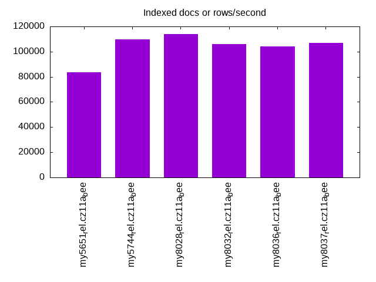

Introduction
This is a report for the insert benchmark with 800M docs and 1 client(s). It is generated by scripts (bash, awk, sed) and Tufte might not be impressed. An overview of the insert benchmark is here and a short update is here. Below, by DBMS, I mean DBMS+version.config. An example is my8020.c10b40 where my means MySQL, 8020 is version 8.0.20 and c10b40 is the name for the configuration file.
The test server has 8 AMD cores, 16G RAM and an NVMe SSD. It is described here as the Beelink. The benchmark was run with 1 client and there were 1 or 3 connections per client (1 for queries or inserts without rate limits, 1+1 for rate limited inserts+deletes). It uses 1 table. It loads 20M rows per table without secondary indexes, creates 3 secondary indexes per table, then inserts 40m+10m rows per table with a delete per insert to avoid growing the table. It then does 6 read+write tests for 1800s each that do queries as fast as possible with 100,100,500,500,1000,1000 inserts/s and the same for deletes/s per client concurrent with the queries. The database is cached in memory. Clients and the DBMS share one server. The per-database configs are in the per-database subdirectories here.
The tested DBMS are:
- my5651_rel.cz11a_bee - MySQL 5.6.51 with the cz11a_bee config
- my5744_rel.cz11a_bee - MySQL 5.7.44 with the cz11a_bee config
- my8028_rel.cz11a_bee - MySQL 8.0.28 with the cz11a_bee config
- my8032_rel.cz11a_bee - MySQL 8.0.32 with the cz11a_bee config
- my8036_rel.cz11a_bee - MySQL 8.0.36 with the cz11a_bee config
- my8037_rel.cz11a_bee - MySQL 8.0.37 with the cz11a_bee config
Contents
- Summary
- l.i0: load without secondary indexes
- l.x: create secondary indexes
- l.i1: continue load after secondary indexes created with 50 inserts per transaction
- l.i2: continue load after secondary indexes created with 5 inserts per transaction
- qr100.L1: range queries with 100 insert/s per client
- qp100.L2: point queries with 100 insert/s per client
- qr500.L3: range queries with 500 insert/s per client
- qp500.L4: point queries with 500 insert/s per client
- qr1000.L5: range queries with 1000 insert/s per client
- qp1000.L6: point queries with 1000 insert/s per client
Summary
The numbers are inserts/s for l.i0, l.i1 and l.i2, indexed docs (or rows) /s for l.x and queries/s for qr100, qp100 thru qr1000, qp1000" The values are the average rate over the entire test for inserts (IPS) and queries (QPS). The range of values for IPS and QPS is split into 3 parts: bottom 25%, middle 50%, top 25%. Values in the bottom 25% have a red background, values in the top 25% have a green background and values in the middle have no color. A gray background is used for values that can be ignored because the DBMS did not sustain the target insert rate. Red backgrounds are not used when the minimum value is within 80% of the max value.
| dbms | l.i0 | l.x | l.i1 | l.i2 | qr100 | qp100 | qr500 | qp500 | qr1000 | qp1000 |
|---|---|---|---|---|---|---|---|---|---|---|
| my5651_rel.cz11a_bee | 97347 | 83647 | 1442 | 1513 | 5279 | 666 | 5022 | 559 | 4525 | 417 |
| my5744_rel.cz11a_bee | 80726 | 109589 | 2530 | 2444 | 4022 | 646 | 4178 | 578 | 4295 | 533 |
| my8028_rel.cz11a_bee | 62276 | 113701 | 3909 | 1111 | 3212 | 627 | 3330 | 574 | 3422 | 535 |
| my8032_rel.cz11a_bee | 54956 | 105848 | 3528 | 1061 | 2928 | 612 | 3102 | 562 | 3212 | 522 |
| my8036_rel.cz11a_bee | 55436 | 104072 | 3576 | 1074 | 3590 | 621 | 3848 | 566 | 3983 | 525 |
| my8037_rel.cz11a_bee | 54021 | 106724 | 3559 | 1076 | 3697 | 618 | 3808 | 567 | 3943 | 526 |
This table has relative throughput, throughput for the DBMS relative to the DBMS in the first line, using the absolute throughput from the previous table. Values less than 0.95 have a yellow background. Values greater than 1.05 have a blue background.
| dbms | l.i0 | l.x | l.i1 | l.i2 | qr100 | qp100 | qr500 | qp500 | qr1000 | qp1000 |
|---|---|---|---|---|---|---|---|---|---|---|
| my5651_rel.cz11a_bee | 1.00 | 1.00 | 1.00 | 1.00 | 1.00 | 1.00 | 1.00 | 1.00 | 1.00 | 1.00 |
| my5744_rel.cz11a_bee | 0.83 | 1.31 | 1.75 | 1.62 | 0.76 | 0.97 | 0.83 | 1.03 | 0.95 | 1.28 |
| my8028_rel.cz11a_bee | 0.64 | 1.36 | 2.71 | 0.73 | 0.61 | 0.94 | 0.66 | 1.03 | 0.76 | 1.28 |
| my8032_rel.cz11a_bee | 0.56 | 1.27 | 2.45 | 0.70 | 0.55 | 0.92 | 0.62 | 1.01 | 0.71 | 1.25 |
| my8036_rel.cz11a_bee | 0.57 | 1.24 | 2.48 | 0.71 | 0.68 | 0.93 | 0.77 | 1.01 | 0.88 | 1.26 |
| my8037_rel.cz11a_bee | 0.55 | 1.28 | 2.47 | 0.71 | 0.70 | 0.93 | 0.76 | 1.01 | 0.87 | 1.26 |
This lists the average rate of inserts/s for the tests that do inserts concurrent with queries. For such tests the query rate is listed in the table above. The read+write tests are setup so that the insert rate should match the target rate every second. Cells that are not at least 95% of the target have a red background to indicate a failure to satisfy the target.
| dbms | qr100.L1 | qp100.L2 | qr500.L3 | qp500.L4 | qr1000.L5 | qp1000.L6 |
|---|---|---|---|---|---|---|
| my5651_rel.cz11a_bee | 100 | 100 | 499 | 499 | 999 | 999 |
| my5744_rel.cz11a_bee | 100 | 100 | 499 | 499 | 998 | 999 |
| my8028_rel.cz11a_bee | 100 | 100 | 499 | 499 | 998 | 998 |
| my8032_rel.cz11a_bee | 100 | 100 | 499 | 499 | 999 | 998 |
| my8036_rel.cz11a_bee | 100 | 100 | 499 | 499 | 998 | 998 |
| my8037_rel.cz11a_bee | 100 | 100 | 499 | 499 | 998 | 998 |
| target | 100 | 100 | 500 | 500 | 1000 | 1000 |
l.i0
l.i0: load without secondary indexes. Graphs for performance per 1-second interval are here.
Average throughput:
Insert response time histogram: each cell has the percentage of responses that take <= the time in the header and max is the max response time in seconds. For the max column values in the top 25% of the range have a red background and in the bottom 25% of the range have a green background. The red background is not used when the min value is within 80% of the max value.
| dbms | 256us | 1ms | 4ms | 16ms | 64ms | 256ms | 1s | 4s | 16s | gt | max |
|---|---|---|---|---|---|---|---|---|---|---|---|
| my5651_rel.cz11a_bee | 86.305 | 13.569 | 0.122 | 0.002 | 0.001 | 0.107 | |||||
| my5744_rel.cz11a_bee | 0.191 | 99.458 | 0.211 | 0.138 | 0.002 | 0.096 | |||||
| my8028_rel.cz11a_bee | 99.471 | 0.385 | 0.142 | 0.002 | 0.126 | ||||||
| my8032_rel.cz11a_bee | 99.400 | 0.458 | 0.142 | 0.001 | 0.104 | ||||||
| my8036_rel.cz11a_bee | 99.422 | 0.435 | 0.142 | 0.001 | 0.103 | ||||||
| my8037_rel.cz11a_bee | 99.411 | 0.446 | 0.142 | 0.001 | nonzero | 0.401 |
Performance metrics for the DBMS listed above. Some are normalized by throughput, others are not. Legend for results is here.
ips qps rps rmbps wps wmbps rpq rkbpq wpi wkbpi csps cpups cspq cpupq dbgb1 dbgb2 rss maxop p50 p99 tag 97347 0 852 3.3 485.1 35.1 0.009 0.035 0.005 0.369 12201 23.0 0.125 19 52.6 68.1 10.7 0.107 97686 90096 my5651_rel.cz11a_bee 80726 0 0 0.0 412.3 29.2 0.000 0.000 0.005 0.371 8801 21.6 0.109 21 52.6 68.1 10.9 0.096 80989 73597 my5744_rel.cz11a_bee 62276 0 0 0.0 377.8 23.3 0.000 0.000 0.006 0.384 7230 21.4 0.116 27 52.4 68.0 11.1 0.126 62428 57135 my8028_rel.cz11a_bee 54956 0 0 0.0 338.0 20.9 0.000 0.000 0.006 0.389 6869 20.9 0.125 30 52.4 68.0 11.1 0.104 55037 51440 my8032_rel.cz11a_bee 55436 0 0 0.0 338.1 21.0 0.000 0.000 0.006 0.388 6642 20.6 0.120 30 52.4 68.0 11.1 0.103 55536 51841 my8036_rel.cz11a_bee 54021 0 0 0.0 329.2 20.4 0.000 0.000 0.006 0.388 6480 20.4 0.120 30 52.4 68.0 11.1 0.401 54040 50543 my8037_rel.cz11a_bee
l.x
l.x: create secondary indexes.
Average throughput:
Performance metrics for the DBMS listed above. Some are normalized by throughput, others are not. Legend for results is here.
ips qps rps rmbps wps wmbps rpq rkbpq wpi wkbpi csps cpups cspq cpupq dbgb1 dbgb2 rss maxop p50 p99 tag 83647 0 555 84.5 707.4 107.2 0.007 1.035 0.008 1.312 1892 11.3 0.023 11 111.4 126.9 10.8 0.002 NA NA my5651_rel.cz11a_bee 109589 0 685 110.1 967.9 130.6 0.006 1.029 0.009 1.221 6268 12.0 0.057 9 121.1 136.7 11.0 0.002 NA NA my5744_rel.cz11a_bee 113701 0 1908 180.9 2322.7 162.7 0.017 1.629 0.020 1.465 8986 44.0 0.079 31 120.7 136.3 11.2 0.004 NA NA my8028_rel.cz11a_bee 105848 0 1776 168.4 2203.0 151.4 0.017 1.629 0.021 1.464 8770 44.1 0.083 33 120.7 136.3 11.2 0.004 NA NA my8032_rel.cz11a_bee 104072 0 1746 165.6 2124.8 148.9 0.017 1.629 0.020 1.465 8548 44.1 0.082 34 120.7 136.3 11.2 0.004 NA NA my8036_rel.cz11a_bee 106724 0 1790 169.7 2177.8 152.7 0.017 1.628 0.020 1.465 8627 43.7 0.081 33 120.7 136.3 11.2 0.004 NA NA my8037_rel.cz11a_bee
l.i1
l.i1: continue load after secondary indexes created with 50 inserts per transaction. Graphs for performance per 1-second interval are here.
Average throughput:

Insert response time histogram: each cell has the percentage of responses that take <= the time in the header and max is the max response time in seconds. For the max column values in the top 25% of the range have a red background and in the bottom 25% of the range have a green background. The red background is not used when the min value is within 80% of the max value.
| dbms | 256us | 1ms | 4ms | 16ms | 64ms | 256ms | 1s | 4s | 16s | gt | max |
|---|---|---|---|---|---|---|---|---|---|---|---|
| my5651_rel.cz11a_bee | 0.887 | 93.932 | 5.181 | nonzero | 0.791 | ||||||
| my5744_rel.cz11a_bee | 59.251 | 39.833 | 0.915 | 0.255 | |||||||
| my8028_rel.cz11a_bee | 0.092 | 85.573 | 13.494 | 0.841 | 0.244 | ||||||
| my8032_rel.cz11a_bee | 0.009 | 83.883 | 15.230 | 0.875 | 0.003 | 0.403 | |||||
| my8036_rel.cz11a_bee | 0.018 | 84.339 | 14.834 | 0.804 | 0.004 | 0.427 | |||||
| my8037_rel.cz11a_bee | 0.011 | 84.186 | 14.908 | 0.888 | 0.006 | 0.433 |
Delete response time histogram: each cell has the percentage of responses that take <= the time in the header and max is the max response time in seconds. For the max column values in the top 25% of the range have a red background and in the bottom 25% of the range have a green background. The red background is not used when the min value is within 80% of the max value.
| dbms | 256us | 1ms | 4ms | 16ms | 64ms | 256ms | 1s | 4s | 16s | gt | max |
|---|---|---|---|---|---|---|---|---|---|---|---|
| my5651_rel.cz11a_bee | 85.111 | 14.557 | 0.330 | 0.001 | nonzero | 0.629 | |||||
| my5744_rel.cz11a_bee | 97.196 | 2.552 | 0.251 | 0.001 | 0.090 | ||||||
| my8028_rel.cz11a_bee | 7.694 | 89.363 | 2.630 | 0.313 | 0.234 | ||||||
| my8032_rel.cz11a_bee | 4.174 | 92.279 | 3.252 | 0.292 | 0.003 | 0.403 | |||||
| my8036_rel.cz11a_bee | 5.259 | 91.372 | 3.141 | 0.224 | 0.004 | 0.417 | |||||
| my8037_rel.cz11a_bee | 4.915 | 91.544 | 3.207 | 0.329 | 0.005 | 0.431 |
Performance metrics for the DBMS listed above. Some are normalized by throughput, others are not. Legend for results is here.
ips qps rps rmbps wps wmbps rpq rkbpq wpi wkbpi csps cpups cspq cpupq dbgb1 dbgb2 rss maxop p50 p99 tag 1442 0 7713 119.9 11189.6 272.6 5.348 85.122 7.758 193.564 49122 20.0 34.058 1109 144.1 159.6 10.5 0.791 1498 849 my5651_rel.cz11a_bee 2530 0 13399 209.4 15414.5 478.0 5.295 84.721 6.091 193.437 82503 29.5 32.603 933 144.5 160.0 10.7 0.255 2647 949 my5744_rel.cz11a_bee 3909 0 8197 128.1 12542.1 329.1 2.097 33.551 3.209 86.217 75924 32.2 19.423 659 167.3 187.4 10.7 0.244 4245 50 my8028_rel.cz11a_bee 3528 0 7783 121.6 11868.1 316.0 2.206 35.297 3.364 91.710 72207 33.1 20.467 751 167.1 186.7 10.8 0.403 3848 0 my8032_rel.cz11a_bee 3576 0 7850 122.7 11981.3 319.0 2.195 35.119 3.350 91.342 71548 33.4 20.005 747 167.0 186.3 10.8 0.427 3946 0 my8036_rel.cz11a_bee 3559 0 7870 123.0 11985.4 319.3 2.211 35.379 3.367 91.863 71691 33.4 20.142 751 167.0 186.5 10.8 0.433 3899 0 my8037_rel.cz11a_bee
l.i2
l.i2: continue load after secondary indexes created with 5 inserts per transaction. Graphs for performance per 1-second interval are here.
Average throughput:
Insert response time histogram: each cell has the percentage of responses that take <= the time in the header and max is the max response time in seconds. For the max column values in the top 25% of the range have a red background and in the bottom 25% of the range have a green background. The red background is not used when the min value is within 80% of the max value.
| dbms | 256us | 1ms | 4ms | 16ms | 64ms | 256ms | 1s | 4s | 16s | gt | max |
|---|---|---|---|---|---|---|---|---|---|---|---|
| my5651_rel.cz11a_bee | nonzero | 5.429 | 70.010 | 24.257 | 0.304 | nonzero | 0.084 | ||||
| my5744_rel.cz11a_bee | 12.562 | 80.173 | 7.091 | 0.174 | nonzero | 0.078 | |||||
| my8028_rel.cz11a_bee | 7.116 | 66.314 | 23.860 | 2.701 | 0.010 | 0.212 | |||||
| my8032_rel.cz11a_bee | 5.135 | 68.452 | 23.720 | 2.683 | 0.011 | 0.187 | |||||
| my8036_rel.cz11a_bee | 5.926 | 68.464 | 23.036 | 2.565 | 0.008 | 0.125 | |||||
| my8037_rel.cz11a_bee | 5.667 | 68.304 | 23.367 | 2.649 | 0.012 | nonzero | 0.562 |
Delete response time histogram: each cell has the percentage of responses that take <= the time in the header and max is the max response time in seconds. For the max column values in the top 25% of the range have a red background and in the bottom 25% of the range have a green background. The red background is not used when the min value is within 80% of the max value.
| dbms | 256us | 1ms | 4ms | 16ms | 64ms | 256ms | 1s | 4s | 16s | gt | max |
|---|---|---|---|---|---|---|---|---|---|---|---|
| my5651_rel.cz11a_bee | nonzero | 52.742 | 44.315 | 2.907 | 0.036 | nonzero | 0.083 | ||||
| my5744_rel.cz11a_bee | 98.503 | 1.063 | 0.425 | 0.008 | nonzero | 0.078 | |||||
| my8028_rel.cz11a_bee | 32.696 | 44.408 | 21.588 | 1.304 | 0.004 | 0.220 | |||||
| my8032_rel.cz11a_bee | 21.040 | 56.500 | 21.203 | 1.252 | 0.005 | 0.197 | |||||
| my8036_rel.cz11a_bee | 24.080 | 54.262 | 20.514 | 1.141 | 0.003 | 0.124 | |||||
| my8037_rel.cz11a_bee | 23.909 | 53.972 | 20.894 | 1.219 | 0.006 | nonzero | 0.418 |
Performance metrics for the DBMS listed above. Some are normalized by throughput, others are not. Legend for results is here.
ips qps rps rmbps wps wmbps rpq rkbpq wpi wkbpi csps cpups cspq cpupq dbgb1 dbgb2 rss maxop p50 p99 tag 1513 0 7842 117.7 10592.5 256.8 5.183 79.683 7.001 173.814 55631 27.2 36.769 1438 144.1 159.6 10.5 0.084 1528 1254 my5651_rel.cz11a_bee 2444 0 12026 187.9 13586.2 417.3 4.921 78.739 5.560 174.861 82026 34.2 33.566 1120 144.5 160.0 10.7 0.078 2427 2038 my5744_rel.cz11a_bee 1111 0 13363 208.8 17944.4 454.1 12.026 192.412 16.149 418.509 91698 36.5 82.522 2628 167.3 185.9 10.8 0.212 554 0 my8028_rel.cz11a_bee 1061 0 12876 201.2 17318.1 439.5 12.139 194.231 16.327 424.299 87266 37.5 82.272 2828 167.1 186.7 10.8 0.187 564 0 my8032_rel.cz11a_bee 1074 0 12966 202.6 17459.6 442.4 12.072 193.150 16.255 421.783 86142 38.1 80.199 2838 167.0 186.3 10.8 0.125 565 0 my8036_rel.cz11a_bee 1076 0 12990 203.0 17462.5 443.5 12.073 193.174 16.231 422.091 86625 38.1 80.514 2833 167.0 186.5 10.8 0.562 564 0 my8037_rel.cz11a_bee
qr100.L1
qr100.L1: range queries with 100 insert/s per client. Graphs for performance per 1-second interval are here.
Average throughput:
Query response time histogram: each cell has the percentage of responses that take <= the time in the header and max is the max response time in seconds. For max values in the top 25% of the range have a red background and in the bottom 25% of the range have a green background. The red background is not used when the min value is within 80% of the max value.
| dbms | 256us | 1ms | 4ms | 16ms | 64ms | 256ms | 1s | 4s | 16s | gt | max |
|---|---|---|---|---|---|---|---|---|---|---|---|
| my5651_rel.cz11a_bee | 95.642 | 4.120 | 0.227 | 0.011 | nonzero | 0.031 | |||||
| my5744_rel.cz11a_bee | 72.162 | 27.685 | 0.147 | 0.007 | 0.014 | ||||||
| my8028_rel.cz11a_bee | 35.740 | 63.948 | 0.295 | 0.016 | 0.001 | 0.047 | |||||
| my8032_rel.cz11a_bee | 17.750 | 81.875 | 0.356 | 0.018 | 0.001 | 0.041 | |||||
| my8036_rel.cz11a_bee | 55.010 | 44.904 | 0.084 | 0.002 | nonzero | 0.048 | |||||
| my8037_rel.cz11a_bee | 60.339 | 39.572 | 0.086 | 0.002 | nonzero | 0.060 |
Insert response time histogram: each cell has the percentage of responses that take <= the time in the header and max is the max response time in seconds. For max values in the top 25% of the range have a red background and in the bottom 25% of the range have a green background. The red background is not used when the min value is within 80% of the max value.
| dbms | 256us | 1ms | 4ms | 16ms | 64ms | 256ms | 1s | 4s | 16s | gt | max |
|---|---|---|---|---|---|---|---|---|---|---|---|
| my5651_rel.cz11a_bee | 46.222 | 53.139 | 0.639 | 0.102 | |||||||
| my5744_rel.cz11a_bee | 63.694 | 36.306 | 0.027 | ||||||||
| my8028_rel.cz11a_bee | 68.750 | 31.194 | 0.056 | 0.090 | |||||||
| my8032_rel.cz11a_bee | 61.583 | 37.333 | 1.083 | 0.132 | |||||||
| my8036_rel.cz11a_bee | 66.750 | 33.194 | 0.056 | 0.080 | |||||||
| my8037_rel.cz11a_bee | 68.028 | 31.778 | 0.194 | 0.094 |
Delete response time histogram: each cell has the percentage of responses that take <= the time in the header and max is the max response time in seconds. For max values in the top 25% of the range have a red background and in the bottom 25% of the range have a green background. The red background is not used when the min value is within 80% of the max value.
| dbms | 256us | 1ms | 4ms | 16ms | 64ms | 256ms | 1s | 4s | 16s | gt | max |
|---|---|---|---|---|---|---|---|---|---|---|---|
| my5651_rel.cz11a_bee | 14.944 | 63.528 | 21.417 | 0.111 | 0.081 | ||||||
| my5744_rel.cz11a_bee | 99.361 | 0.639 | 0.012 | ||||||||
| my8028_rel.cz11a_bee | 89.361 | 10.639 | 0.014 | ||||||||
| my8032_rel.cz11a_bee | 81.833 | 17.611 | 0.556 | 0.047 | |||||||
| my8036_rel.cz11a_bee | 84.472 | 15.472 | 0.056 | 0.024 | |||||||
| my8037_rel.cz11a_bee | 83.111 | 16.889 | 0.013 |
Performance metrics for the DBMS listed above. Some are normalized by throughput, others are not. Legend for results is here.
ips qps rps rmbps wps wmbps rpq rkbpq wpi wkbpi csps cpups cspq cpupq dbgb1 dbgb2 rss maxop p50 p99 tag 100 5279 549 8.5 451.5 13.8 0.104 1.654 4.524 141.438 23037 13.4 4.364 203 144.1 159.6 10.5 0.031 5274 3660 my5651_rel.cz11a_bee 100 4022 546 8.5 372.7 11.3 0.136 2.174 3.734 116.106 17563 14.0 4.367 278 144.5 160.0 10.7 0.014 3979 3006 my5744_rel.cz11a_bee 100 3212 2219 34.7 2985.1 75.2 0.691 11.052 29.911 771.455 31794 16.1 9.899 401 167.3 185.9 10.7 0.047 3196 1710 my8028_rel.cz11a_bee 100 2928 2272 35.5 3068.1 77.7 0.776 12.414 30.743 796.804 31479 16.5 10.750 451 167.1 186.7 10.7 0.041 2956 1486 my8032_rel.cz11a_bee 100 3590 2169 33.9 3000.2 76.0 0.604 9.665 30.063 779.373 33138 16.9 9.229 377 167.0 186.3 10.8 0.048 3596 2479 my8036_rel.cz11a_bee 100 3697 2179 34.1 3033.2 76.8 0.590 9.432 30.393 787.879 34042 17.1 9.208 370 167.0 186.5 10.8 0.060 3692 2605 my8037_rel.cz11a_bee
qp100.L2
qp100.L2: point queries with 100 insert/s per client. Graphs for performance per 1-second interval are here.
Average throughput:
Query response time histogram: each cell has the percentage of responses that take <= the time in the header and max is the max response time in seconds. For max values in the top 25% of the range have a red background and in the bottom 25% of the range have a green background. The red background is not used when the min value is within 80% of the max value.
| dbms | 256us | 1ms | 4ms | 16ms | 64ms | 256ms | 1s | 4s | 16s | gt | max |
|---|---|---|---|---|---|---|---|---|---|---|---|
| my5651_rel.cz11a_bee | 0.858 | 98.800 | 0.341 | 0.001 | 0.038 | ||||||
| my5744_rel.cz11a_bee | 0.408 | 99.382 | 0.210 | 0.001 | 0.039 | ||||||
| my8028_rel.cz11a_bee | 0.181 | 99.646 | 0.172 | 0.001 | 0.039 | ||||||
| my8032_rel.cz11a_bee | 0.106 | 99.714 | 0.179 | 0.001 | 0.041 | ||||||
| my8036_rel.cz11a_bee | 0.141 | 99.682 | 0.176 | 0.001 | 0.042 | ||||||
| my8037_rel.cz11a_bee | 0.133 | 99.691 | 0.175 | 0.001 | 0.041 |
Insert response time histogram: each cell has the percentage of responses that take <= the time in the header and max is the max response time in seconds. For max values in the top 25% of the range have a red background and in the bottom 25% of the range have a green background. The red background is not used when the min value is within 80% of the max value.
| dbms | 256us | 1ms | 4ms | 16ms | 64ms | 256ms | 1s | 4s | 16s | gt | max |
|---|---|---|---|---|---|---|---|---|---|---|---|
| my5651_rel.cz11a_bee | 29.750 | 70.167 | 0.083 | 0.071 | |||||||
| my5744_rel.cz11a_bee | 88.250 | 11.750 | 0.048 | ||||||||
| my8028_rel.cz11a_bee | 93.528 | 6.472 | 0.030 | ||||||||
| my8032_rel.cz11a_bee | 90.361 | 9.639 | 0.026 | ||||||||
| my8036_rel.cz11a_bee | 89.250 | 10.750 | 0.030 | ||||||||
| my8037_rel.cz11a_bee | 90.306 | 9.694 | 0.029 |
Delete response time histogram: each cell has the percentage of responses that take <= the time in the header and max is the max response time in seconds. For max values in the top 25% of the range have a red background and in the bottom 25% of the range have a green background. The red background is not used when the min value is within 80% of the max value.
| dbms | 256us | 1ms | 4ms | 16ms | 64ms | 256ms | 1s | 4s | 16s | gt | max |
|---|---|---|---|---|---|---|---|---|---|---|---|
| my5651_rel.cz11a_bee | 59.222 | 29.278 | 11.500 | 0.045 | |||||||
| my5744_rel.cz11a_bee | 98.944 | 1.056 | 0.013 | ||||||||
| my8028_rel.cz11a_bee | 98.778 | 1.222 | 0.014 | ||||||||
| my8032_rel.cz11a_bee | 98.167 | 1.806 | 0.028 | 0.022 | |||||||
| my8036_rel.cz11a_bee | 98.444 | 1.528 | 0.028 | 0.021 | |||||||
| my8037_rel.cz11a_bee | 98.472 | 1.500 | 0.028 | 0.018 |
Performance metrics for the DBMS listed above. Some are normalized by throughput, others are not. Legend for results is here.
ips qps rps rmbps wps wmbps rpq rkbpq wpi wkbpi csps cpups cspq cpupq dbgb1 dbgb2 rss maxop p50 p99 tag 100 666 6388 99.8 798.6 24.0 9.591 153.385 8.002 246.480 17593 5.2 26.416 625 144.1 159.6 10.5 0.038 671 575 my5651_rel.cz11a_bee 100 646 6230 97.3 824.9 24.2 9.644 154.299 8.266 247.840 17298 5.3 26.777 656 144.5 160.0 10.7 0.039 655 591 my5744_rel.cz11a_bee 100 627 6073 94.9 961.1 24.1 9.689 155.023 9.630 247.477 18142 5.4 28.944 689 167.3 185.9 10.7 0.039 639 575 my8028_rel.cz11a_bee 100 612 5957 93.1 954.6 24.1 9.732 155.714 9.565 247.471 18001 5.7 29.408 745 167.1 186.7 10.7 0.041 623 559 my8032_rel.cz11a_bee 100 621 6018 94.0 961.5 24.3 9.696 155.136 9.634 249.303 18137 5.7 29.221 735 167.0 186.3 10.8 0.042 623 575 my8036_rel.cz11a_bee 100 618 6004 93.8 952.6 24.1 9.707 155.306 9.545 247.035 18352 5.8 29.671 750 167.0 186.5 10.8 0.041 623 575 my8037_rel.cz11a_bee
qr500.L3
qr500.L3: range queries with 500 insert/s per client. Graphs for performance per 1-second interval are here.
Average throughput:
Query response time histogram: each cell has the percentage of responses that take <= the time in the header and max is the max response time in seconds. For max values in the top 25% of the range have a red background and in the bottom 25% of the range have a green background. The red background is not used when the min value is within 80% of the max value.
| dbms | 256us | 1ms | 4ms | 16ms | 64ms | 256ms | 1s | 4s | 16s | gt | max |
|---|---|---|---|---|---|---|---|---|---|---|---|
| my5651_rel.cz11a_bee | 93.186 | 6.123 | 0.668 | 0.022 | nonzero | 0.026 | |||||
| my5744_rel.cz11a_bee | 76.102 | 23.721 | 0.159 | 0.018 | 0.010 | ||||||
| my8028_rel.cz11a_bee | 42.441 | 57.338 | 0.202 | 0.019 | nonzero | 0.048 | |||||
| my8032_rel.cz11a_bee | 27.064 | 72.696 | 0.220 | 0.020 | 0.011 | ||||||
| my8036_rel.cz11a_bee | 63.789 | 36.202 | 0.008 | 0.001 | 0.010 | ||||||
| my8037_rel.cz11a_bee | 62.251 | 37.740 | 0.008 | 0.001 | 0.014 |
Insert response time histogram: each cell has the percentage of responses that take <= the time in the header and max is the max response time in seconds. For max values in the top 25% of the range have a red background and in the bottom 25% of the range have a green background. The red background is not used when the min value is within 80% of the max value.
| dbms | 256us | 1ms | 4ms | 16ms | 64ms | 256ms | 1s | 4s | 16s | gt | max |
|---|---|---|---|---|---|---|---|---|---|---|---|
| my5651_rel.cz11a_bee | 49.444 | 50.478 | 0.078 | 0.108 | |||||||
| my5744_rel.cz11a_bee | 94.200 | 5.800 | 0.031 | ||||||||
| my8028_rel.cz11a_bee | 92.489 | 7.511 | 0.036 | ||||||||
| my8032_rel.cz11a_bee | 91.228 | 8.772 | 0.047 | ||||||||
| my8036_rel.cz11a_bee | 90.283 | 9.717 | 0.037 | ||||||||
| my8037_rel.cz11a_bee | 90.239 | 9.756 | 0.006 | 0.305 |
Delete response time histogram: each cell has the percentage of responses that take <= the time in the header and max is the max response time in seconds. For max values in the top 25% of the range have a red background and in the bottom 25% of the range have a green background. The red background is not used when the min value is within 80% of the max value.
| dbms | 256us | 1ms | 4ms | 16ms | 64ms | 256ms | 1s | 4s | 16s | gt | max |
|---|---|---|---|---|---|---|---|---|---|---|---|
| my5651_rel.cz11a_bee | 12.117 | 70.044 | 17.833 | 0.006 | 0.069 | ||||||
| my5744_rel.cz11a_bee | 99.156 | 0.839 | 0.006 | 0.019 | |||||||
| my8028_rel.cz11a_bee | 98.717 | 1.283 | 0.016 | ||||||||
| my8032_rel.cz11a_bee | 95.522 | 4.461 | 0.017 | 0.017 | |||||||
| my8036_rel.cz11a_bee | 97.483 | 2.500 | 0.017 | 0.023 | |||||||
| my8037_rel.cz11a_bee | 97.028 | 2.956 | 0.011 | 0.006 | 0.279 |
Performance metrics for the DBMS listed above. Some are normalized by throughput, others are not. Legend for results is here.
ips qps rps rmbps wps wmbps rpq rkbpq wpi wkbpi csps cpups cspq cpupq dbgb1 dbgb2 rss maxop p50 p99 tag 499 5022 2572 40.0 2528.7 77.4 0.512 8.151 5.066 158.736 33669 17.9 6.705 285 144.1 159.6 10.5 0.026 5034 2909 my5651_rel.cz11a_bee 499 4178 2549 39.8 2547.9 78.2 0.610 9.763 5.105 160.462 29459 17.2 7.051 329 144.5 160.0 10.7 0.010 4155 2861 my5744_rel.cz11a_bee 499 3330 2595 40.6 3175.4 80.8 0.779 12.470 6.362 165.771 31698 17.2 9.519 413 167.3 185.9 10.7 0.048 3324 2222 my8028_rel.cz11a_bee 499 3102 2595 40.5 3179.9 81.8 0.837 13.384 6.371 167.732 31117 17.4 10.030 449 167.1 186.7 10.7 0.011 3100 2046 my8032_rel.cz11a_bee 499 3848 2541 39.7 3174.4 81.6 0.660 10.567 6.360 167.451 33723 17.9 8.764 372 167.0 186.3 10.8 0.010 3836 3404 my8036_rel.cz11a_bee 499 3808 2540 39.7 3172.7 81.6 0.667 10.676 6.361 167.452 33672 18.0 8.843 378 167.0 186.5 10.8 0.014 3788 3420 my8037_rel.cz11a_bee
qp500.L4
qp500.L4: point queries with 500 insert/s per client. Graphs for performance per 1-second interval are here.
Average throughput:
Query response time histogram: each cell has the percentage of responses that take <= the time in the header and max is the max response time in seconds. For max values in the top 25% of the range have a red background and in the bottom 25% of the range have a green background. The red background is not used when the min value is within 80% of the max value.
| dbms | 256us | 1ms | 4ms | 16ms | 64ms | 256ms | 1s | 4s | 16s | gt | max |
|---|---|---|---|---|---|---|---|---|---|---|---|
| my5651_rel.cz11a_bee | 0.055 | 97.898 | 2.042 | 0.005 | 0.041 | ||||||
| my5744_rel.cz11a_bee | 0.037 | 98.095 | 1.862 | 0.006 | 0.043 | ||||||
| my8028_rel.cz11a_bee | 0.013 | 99.027 | 0.935 | 0.025 | 0.050 | ||||||
| my8032_rel.cz11a_bee | 0.007 | 98.919 | 1.051 | 0.023 | 0.048 | ||||||
| my8036_rel.cz11a_bee | 0.008 | 98.966 | 0.999 | 0.027 | 0.048 | ||||||
| my8037_rel.cz11a_bee | 0.009 | 98.987 | 0.974 | 0.030 | 0.049 |
Insert response time histogram: each cell has the percentage of responses that take <= the time in the header and max is the max response time in seconds. For max values in the top 25% of the range have a red background and in the bottom 25% of the range have a green background. The red background is not used when the min value is within 80% of the max value.
| dbms | 256us | 1ms | 4ms | 16ms | 64ms | 256ms | 1s | 4s | 16s | gt | max |
|---|---|---|---|---|---|---|---|---|---|---|---|
| my5651_rel.cz11a_bee | 50.028 | 45.533 | 4.439 | 0.127 | |||||||
| my5744_rel.cz11a_bee | 88.922 | 11.078 | 0.063 | ||||||||
| my8028_rel.cz11a_bee | 95.689 | 4.283 | 0.028 | 0.071 | |||||||
| my8032_rel.cz11a_bee | 91.844 | 8.106 | 0.050 | 0.071 | |||||||
| my8036_rel.cz11a_bee | 92.606 | 7.339 | 0.056 | 0.079 | |||||||
| my8037_rel.cz11a_bee | 94.522 | 5.461 | 0.017 | 0.077 |
Delete response time histogram: each cell has the percentage of responses that take <= the time in the header and max is the max response time in seconds. For max values in the top 25% of the range have a red background and in the bottom 25% of the range have a green background. The red background is not used when the min value is within 80% of the max value.
| dbms | 256us | 1ms | 4ms | 16ms | 64ms | 256ms | 1s | 4s | 16s | gt | max |
|---|---|---|---|---|---|---|---|---|---|---|---|
| my5651_rel.cz11a_bee | 19.628 | 50.739 | 29.511 | 0.122 | 0.092 | ||||||
| my5744_rel.cz11a_bee | 98.211 | 1.783 | 0.006 | 0.019 | |||||||
| my8028_rel.cz11a_bee | 98.261 | 1.728 | 0.011 | 0.018 | |||||||
| my8032_rel.cz11a_bee | 92.544 | 7.378 | 0.078 | 0.040 | |||||||
| my8036_rel.cz11a_bee | 95.972 | 3.933 | 0.094 | 0.030 | |||||||
| my8037_rel.cz11a_bee | 95.911 | 4.033 | 0.056 | 0.029 |
Performance metrics for the DBMS listed above. Some are normalized by throughput, others are not. Legend for results is here.
ips qps rps rmbps wps wmbps rpq rkbpq wpi wkbpi csps cpups cspq cpupq dbgb1 dbgb2 rss maxop p50 p99 tag 499 559 7897 123.2 2989.2 89.9 14.125 225.605 5.989 184.441 27856 10.4 49.823 1488 144.1 159.6 10.5 0.041 559 496 my5651_rel.cz11a_bee 499 578 8056 125.9 3082.1 89.8 13.939 223.016 6.175 184.192 28371 8.7 49.085 1204 144.5 160.0 10.7 0.043 575 527 my5744_rel.cz11a_bee 499 574 8025 125.4 3601.2 91.4 13.968 223.494 7.215 187.470 33350 9.3 58.050 1295 167.3 185.9 10.7 0.050 575 543 my8028_rel.cz11a_bee 499 562 7915 123.7 3618.8 92.6 14.071 225.131 7.251 189.924 33315 10.2 59.226 1451 167.1 186.7 10.7 0.048 559 543 my8032_rel.cz11a_bee 499 566 7947 124.2 3614.9 92.5 14.035 224.560 7.243 189.755 33094 10.0 58.449 1413 167.0 186.3 10.8 0.048 560 543 my8036_rel.cz11a_bee 499 567 7956 124.3 3615.4 92.5 14.025 224.392 7.244 189.804 33165 10.1 58.460 1424 167.0 186.5 10.8 0.049 575 543 my8037_rel.cz11a_bee
qr1000.L5
qr1000.L5: range queries with 1000 insert/s per client. Graphs for performance per 1-second interval are here.
Average throughput:
Query response time histogram: each cell has the percentage of responses that take <= the time in the header and max is the max response time in seconds. For max values in the top 25% of the range have a red background and in the bottom 25% of the range have a green background. The red background is not used when the min value is within 80% of the max value.
| dbms | 256us | 1ms | 4ms | 16ms | 64ms | 256ms | 1s | 4s | 16s | gt | max |
|---|---|---|---|---|---|---|---|---|---|---|---|
| my5651_rel.cz11a_bee | 89.007 | 9.570 | 1.367 | 0.056 | nonzero | 0.039 | |||||
| my5744_rel.cz11a_bee | 79.022 | 20.785 | 0.173 | 0.020 | nonzero | 0.026 | |||||
| my8028_rel.cz11a_bee | 47.978 | 51.785 | 0.214 | 0.023 | nonzero | 0.041 | |||||
| my8032_rel.cz11a_bee | 36.570 | 63.175 | 0.234 | 0.021 | nonzero | 0.051 | |||||
| my8036_rel.cz11a_bee | 67.766 | 32.220 | 0.013 | 0.001 | nonzero | 0.024 | |||||
| my8037_rel.cz11a_bee | 66.595 | 33.387 | 0.017 | 0.001 | nonzero | 0.031 |
Insert response time histogram: each cell has the percentage of responses that take <= the time in the header and max is the max response time in seconds. For max values in the top 25% of the range have a red background and in the bottom 25% of the range have a green background. The red background is not used when the min value is within 80% of the max value.
| dbms | 256us | 1ms | 4ms | 16ms | 64ms | 256ms | 1s | 4s | 16s | gt | max |
|---|---|---|---|---|---|---|---|---|---|---|---|
| my5651_rel.cz11a_bee | 51.219 | 48.322 | 0.458 | 0.144 | |||||||
| my5744_rel.cz11a_bee | 96.647 | 3.353 | 0.045 | ||||||||
| my8028_rel.cz11a_bee | 94.194 | 5.803 | 0.003 | 0.071 | |||||||
| my8032_rel.cz11a_bee | 95.508 | 4.489 | 0.003 | 0.113 | |||||||
| my8036_rel.cz11a_bee | 94.342 | 5.658 | 0.032 | ||||||||
| my8037_rel.cz11a_bee | 93.919 | 6.078 | 0.003 | 0.211 |
Delete response time histogram: each cell has the percentage of responses that take <= the time in the header and max is the max response time in seconds. For max values in the top 25% of the range have a red background and in the bottom 25% of the range have a green background. The red background is not used when the min value is within 80% of the max value.
| dbms | 256us | 1ms | 4ms | 16ms | 64ms | 256ms | 1s | 4s | 16s | gt | max |
|---|---|---|---|---|---|---|---|---|---|---|---|
| my5651_rel.cz11a_bee | 25.233 | 52.286 | 22.461 | 0.019 | 0.102 | ||||||
| my5744_rel.cz11a_bee | 98.308 | 1.686 | 0.006 | 0.018 | |||||||
| my8028_rel.cz11a_bee | 98.794 | 1.206 | 0.014 | ||||||||
| my8032_rel.cz11a_bee | 94.619 | 5.364 | 0.014 | 0.003 | 0.104 | ||||||
| my8036_rel.cz11a_bee | 97.342 | 2.644 | 0.014 | 0.018 | |||||||
| my8037_rel.cz11a_bee | 96.517 | 3.464 | 0.017 | 0.003 | 0.211 |
Performance metrics for the DBMS listed above. Some are normalized by throughput, others are not. Legend for results is here.
ips qps rps rmbps wps wmbps rpq rkbpq wpi wkbpi csps cpups cspq cpupq dbgb1 dbgb2 rss maxop p50 p99 tag 999 4525 5001 77.7 5587.7 164.5 1.105 17.588 5.594 168.636 47700 23.1 10.542 408 144.1 159.6 10.5 0.039 4555 2175 my5651_rel.cz11a_bee 998 4295 4961 77.5 5411.8 165.3 1.155 18.480 5.421 169.597 44593 21.4 10.382 399 144.5 160.0 10.7 0.026 4299 2621 my5744_rel.cz11a_bee 998 3422 4922 76.9 6450.6 163.8 1.438 23.015 6.462 168.033 50124 21.6 14.648 505 167.3 185.9 10.7 0.041 3436 2078 my8028_rel.cz11a_bee 999 3212 4924 76.9 6455.3 165.3 1.533 24.524 6.463 169.504 50025 22.4 15.572 558 167.1 186.7 10.7 0.051 3212 1919 my8032_rel.cz11a_bee 998 3983 4840 75.6 6449.7 165.2 1.215 19.444 6.461 169.449 52690 22.5 13.230 452 167.0 186.3 10.8 0.024 3980 3486 my8036_rel.cz11a_bee 998 3943 4837 75.6 6446.1 165.1 1.227 19.627 6.457 169.369 52494 22.6 13.312 458 167.0 186.5 10.8 0.031 3933 3520 my8037_rel.cz11a_bee
qp1000.L6
qp1000.L6: point queries with 1000 insert/s per client. Graphs for performance per 1-second interval are here.
Average throughput:
Query response time histogram: each cell has the percentage of responses that take <= the time in the header and max is the max response time in seconds. For max values in the top 25% of the range have a red background and in the bottom 25% of the range have a green background. The red background is not used when the min value is within 80% of the max value.
| dbms | 256us | 1ms | 4ms | 16ms | 64ms | 256ms | 1s | 4s | 16s | gt | max |
|---|---|---|---|---|---|---|---|---|---|---|---|
| my5651_rel.cz11a_bee | 0.003 | 93.746 | 6.235 | 0.015 | 0.043 | ||||||
| my5744_rel.cz11a_bee | 0.006 | 95.808 | 4.174 | 0.011 | 0.055 | ||||||
| my8028_rel.cz11a_bee | 0.002 | 98.026 | 1.886 | 0.086 | 0.054 | ||||||
| my8032_rel.cz11a_bee | 0.001 | 97.904 | 2.006 | 0.090 | 0.052 | ||||||
| my8036_rel.cz11a_bee | 0.001 | 97.967 | 1.936 | 0.096 | 0.054 | ||||||
| my8037_rel.cz11a_bee | 0.001 | 97.991 | 1.907 | 0.101 | 0.052 |
Insert response time histogram: each cell has the percentage of responses that take <= the time in the header and max is the max response time in seconds. For max values in the top 25% of the range have a red background and in the bottom 25% of the range have a green background. The red background is not used when the min value is within 80% of the max value.
| dbms | 256us | 1ms | 4ms | 16ms | 64ms | 256ms | 1s | 4s | 16s | gt | max |
|---|---|---|---|---|---|---|---|---|---|---|---|
| my5651_rel.cz11a_bee | 29.072 | 66.267 | 4.661 | 0.167 | |||||||
| my5744_rel.cz11a_bee | 88.247 | 11.728 | 0.025 | 0.084 | |||||||
| my8028_rel.cz11a_bee | 89.325 | 10.578 | 0.097 | 0.094 | |||||||
| my8032_rel.cz11a_bee | 91.372 | 8.575 | 0.053 | 0.110 | |||||||
| my8036_rel.cz11a_bee | 90.578 | 9.369 | 0.053 | 0.087 | |||||||
| my8037_rel.cz11a_bee | 91.122 | 8.803 | 0.075 | 0.091 |
Delete response time histogram: each cell has the percentage of responses that take <= the time in the header and max is the max response time in seconds. For max values in the top 25% of the range have a red background and in the bottom 25% of the range have a green background. The red background is not used when the min value is within 80% of the max value.
| dbms | 256us | 1ms | 4ms | 16ms | 64ms | 256ms | 1s | 4s | 16s | gt | max |
|---|---|---|---|---|---|---|---|---|---|---|---|
| my5651_rel.cz11a_bee | 23.858 | 50.914 | 24.961 | 0.267 | 0.112 | ||||||
| my5744_rel.cz11a_bee | 97.739 | 2.250 | 0.011 | 0.025 | |||||||
| my8028_rel.cz11a_bee | 96.750 | 3.153 | 0.097 | 0.033 | |||||||
| my8032_rel.cz11a_bee | 91.758 | 8.161 | 0.081 | 0.040 | |||||||
| my8036_rel.cz11a_bee | 95.425 | 4.506 | 0.069 | 0.045 | |||||||
| my8037_rel.cz11a_bee | 94.547 | 5.333 | 0.119 | 0.046 |
Performance metrics for the DBMS listed above. Some are normalized by throughput, others are not. Legend for results is here.
ips qps rps rmbps wps wmbps rpq rkbpq wpi wkbpi csps cpups cspq cpupq dbgb1 dbgb2 rss maxop p50 p99 tag 999 417 9164 142.8 7445.7 168.1 21.976 350.591 7.455 172.331 41045 16.4 98.429 3146 144.1 159.6 10.5 0.043 416 384 my5651_rel.cz11a_bee 999 533 10250 160.2 5585.4 169.7 19.241 307.858 5.592 173.966 41639 13.3 78.165 1997 144.5 160.0 10.7 0.055 527 495 my5744_rel.cz11a_bee 998 535 10199 159.4 6629.1 168.1 19.067 305.068 6.640 172.401 52640 14.0 98.412 2094 167.3 185.9 10.7 0.054 528 496 my8028_rel.cz11a_bee 998 522 10078 157.5 6676.4 170.6 19.291 308.661 6.688 174.954 52558 14.8 100.609 2267 167.1 186.7 10.7 0.052 527 495 my8032_rel.cz11a_bee 998 525 10104 157.9 6670.2 170.4 19.230 307.687 6.682 174.784 52207 14.6 99.366 2223 167.0 186.3 10.8 0.054 527 495 my8036_rel.cz11a_bee 998 526 10115 158.0 6671.4 170.4 19.211 307.378 6.683 174.821 52339 14.7 99.408 2234 167.0 186.5 10.8 0.052 527 495 my8037_rel.cz11a_bee
l.i0
l.i0: load without secondary indexes
Performance metrics for all DBMS, not just the ones listed above. Some are normalized by throughput, others are not. Legend for results is here.
ips qps rps rmbps wps wmbps rpq rkbpq wpi wkbpi csps cpups cspq cpupq dbgb1 dbgb2 rss maxop p50 p99 tag 97347 0 852 3.3 485.1 35.1 0.009 0.035 0.005 0.369 12201 23.0 0.125 19 52.6 68.1 10.7 0.107 97686 90096 my5651_rel.cz11a_bee 80726 0 0 0.0 412.3 29.2 0.000 0.000 0.005 0.371 8801 21.6 0.109 21 52.6 68.1 10.9 0.096 80989 73597 my5744_rel.cz11a_bee 62276 0 0 0.0 377.8 23.3 0.000 0.000 0.006 0.384 7230 21.4 0.116 27 52.4 68.0 11.1 0.126 62428 57135 my8028_rel.cz11a_bee 54956 0 0 0.0 338.0 20.9 0.000 0.000 0.006 0.389 6869 20.9 0.125 30 52.4 68.0 11.1 0.104 55037 51440 my8032_rel.cz11a_bee 55436 0 0 0.0 338.1 21.0 0.000 0.000 0.006 0.388 6642 20.6 0.120 30 52.4 68.0 11.1 0.103 55536 51841 my8036_rel.cz11a_bee 54021 0 0 0.0 329.2 20.4 0.000 0.000 0.006 0.388 6480 20.4 0.120 30 52.4 68.0 11.1 0.401 54040 50543 my8037_rel.cz11a_bee
l.x
l.x: create secondary indexes
Performance metrics for all DBMS, not just the ones listed above. Some are normalized by throughput, others are not. Legend for results is here.
ips qps rps rmbps wps wmbps rpq rkbpq wpi wkbpi csps cpups cspq cpupq dbgb1 dbgb2 rss maxop p50 p99 tag 83647 0 555 84.5 707.4 107.2 0.007 1.035 0.008 1.312 1892 11.3 0.023 11 111.4 126.9 10.8 0.002 NA NA my5651_rel.cz11a_bee 109589 0 685 110.1 967.9 130.6 0.006 1.029 0.009 1.221 6268 12.0 0.057 9 121.1 136.7 11.0 0.002 NA NA my5744_rel.cz11a_bee 113701 0 1908 180.9 2322.7 162.7 0.017 1.629 0.020 1.465 8986 44.0 0.079 31 120.7 136.3 11.2 0.004 NA NA my8028_rel.cz11a_bee 105848 0 1776 168.4 2203.0 151.4 0.017 1.629 0.021 1.464 8770 44.1 0.083 33 120.7 136.3 11.2 0.004 NA NA my8032_rel.cz11a_bee 104072 0 1746 165.6 2124.8 148.9 0.017 1.629 0.020 1.465 8548 44.1 0.082 34 120.7 136.3 11.2 0.004 NA NA my8036_rel.cz11a_bee 106724 0 1790 169.7 2177.8 152.7 0.017 1.628 0.020 1.465 8627 43.7 0.081 33 120.7 136.3 11.2 0.004 NA NA my8037_rel.cz11a_bee
l.i1
l.i1: continue load after secondary indexes created with 50 inserts per transaction
Performance metrics for all DBMS, not just the ones listed above. Some are normalized by throughput, others are not. Legend for results is here.
ips qps rps rmbps wps wmbps rpq rkbpq wpi wkbpi csps cpups cspq cpupq dbgb1 dbgb2 rss maxop p50 p99 tag 1442 0 7713 119.9 11189.6 272.6 5.348 85.122 7.758 193.564 49122 20.0 34.058 1109 144.1 159.6 10.5 0.791 1498 849 my5651_rel.cz11a_bee 2530 0 13399 209.4 15414.5 478.0 5.295 84.721 6.091 193.437 82503 29.5 32.603 933 144.5 160.0 10.7 0.255 2647 949 my5744_rel.cz11a_bee 3909 0 8197 128.1 12542.1 329.1 2.097 33.551 3.209 86.217 75924 32.2 19.423 659 167.3 187.4 10.7 0.244 4245 50 my8028_rel.cz11a_bee 3528 0 7783 121.6 11868.1 316.0 2.206 35.297 3.364 91.710 72207 33.1 20.467 751 167.1 186.7 10.8 0.403 3848 0 my8032_rel.cz11a_bee 3576 0 7850 122.7 11981.3 319.0 2.195 35.119 3.350 91.342 71548 33.4 20.005 747 167.0 186.3 10.8 0.427 3946 0 my8036_rel.cz11a_bee 3559 0 7870 123.0 11985.4 319.3 2.211 35.379 3.367 91.863 71691 33.4 20.142 751 167.0 186.5 10.8 0.433 3899 0 my8037_rel.cz11a_bee
l.i2
l.i2: continue load after secondary indexes created with 5 inserts per transaction
Performance metrics for all DBMS, not just the ones listed above. Some are normalized by throughput, others are not. Legend for results is here.
ips qps rps rmbps wps wmbps rpq rkbpq wpi wkbpi csps cpups cspq cpupq dbgb1 dbgb2 rss maxop p50 p99 tag 1513 0 7842 117.7 10592.5 256.8 5.183 79.683 7.001 173.814 55631 27.2 36.769 1438 144.1 159.6 10.5 0.084 1528 1254 my5651_rel.cz11a_bee 2444 0 12026 187.9 13586.2 417.3 4.921 78.739 5.560 174.861 82026 34.2 33.566 1120 144.5 160.0 10.7 0.078 2427 2038 my5744_rel.cz11a_bee 1111 0 13363 208.8 17944.4 454.1 12.026 192.412 16.149 418.509 91698 36.5 82.522 2628 167.3 185.9 10.8 0.212 554 0 my8028_rel.cz11a_bee 1061 0 12876 201.2 17318.1 439.5 12.139 194.231 16.327 424.299 87266 37.5 82.272 2828 167.1 186.7 10.8 0.187 564 0 my8032_rel.cz11a_bee 1074 0 12966 202.6 17459.6 442.4 12.072 193.150 16.255 421.783 86142 38.1 80.199 2838 167.0 186.3 10.8 0.125 565 0 my8036_rel.cz11a_bee 1076 0 12990 203.0 17462.5 443.5 12.073 193.174 16.231 422.091 86625 38.1 80.514 2833 167.0 186.5 10.8 0.562 564 0 my8037_rel.cz11a_bee
qr100.L1
qr100.L1: range queries with 100 insert/s per client
Performance metrics for all DBMS, not just the ones listed above. Some are normalized by throughput, others are not. Legend for results is here.
ips qps rps rmbps wps wmbps rpq rkbpq wpi wkbpi csps cpups cspq cpupq dbgb1 dbgb2 rss maxop p50 p99 tag 100 5279 549 8.5 451.5 13.8 0.104 1.654 4.524 141.438 23037 13.4 4.364 203 144.1 159.6 10.5 0.031 5274 3660 my5651_rel.cz11a_bee 100 4022 546 8.5 372.7 11.3 0.136 2.174 3.734 116.106 17563 14.0 4.367 278 144.5 160.0 10.7 0.014 3979 3006 my5744_rel.cz11a_bee 100 3212 2219 34.7 2985.1 75.2 0.691 11.052 29.911 771.455 31794 16.1 9.899 401 167.3 185.9 10.7 0.047 3196 1710 my8028_rel.cz11a_bee 100 2928 2272 35.5 3068.1 77.7 0.776 12.414 30.743 796.804 31479 16.5 10.750 451 167.1 186.7 10.7 0.041 2956 1486 my8032_rel.cz11a_bee 100 3590 2169 33.9 3000.2 76.0 0.604 9.665 30.063 779.373 33138 16.9 9.229 377 167.0 186.3 10.8 0.048 3596 2479 my8036_rel.cz11a_bee 100 3697 2179 34.1 3033.2 76.8 0.590 9.432 30.393 787.879 34042 17.1 9.208 370 167.0 186.5 10.8 0.060 3692 2605 my8037_rel.cz11a_bee
qp100.L2
qp100.L2: point queries with 100 insert/s per client
Performance metrics for all DBMS, not just the ones listed above. Some are normalized by throughput, others are not. Legend for results is here.
ips qps rps rmbps wps wmbps rpq rkbpq wpi wkbpi csps cpups cspq cpupq dbgb1 dbgb2 rss maxop p50 p99 tag 100 666 6388 99.8 798.6 24.0 9.591 153.385 8.002 246.480 17593 5.2 26.416 625 144.1 159.6 10.5 0.038 671 575 my5651_rel.cz11a_bee 100 646 6230 97.3 824.9 24.2 9.644 154.299 8.266 247.840 17298 5.3 26.777 656 144.5 160.0 10.7 0.039 655 591 my5744_rel.cz11a_bee 100 627 6073 94.9 961.1 24.1 9.689 155.023 9.630 247.477 18142 5.4 28.944 689 167.3 185.9 10.7 0.039 639 575 my8028_rel.cz11a_bee 100 612 5957 93.1 954.6 24.1 9.732 155.714 9.565 247.471 18001 5.7 29.408 745 167.1 186.7 10.7 0.041 623 559 my8032_rel.cz11a_bee 100 621 6018 94.0 961.5 24.3 9.696 155.136 9.634 249.303 18137 5.7 29.221 735 167.0 186.3 10.8 0.042 623 575 my8036_rel.cz11a_bee 100 618 6004 93.8 952.6 24.1 9.707 155.306 9.545 247.035 18352 5.8 29.671 750 167.0 186.5 10.8 0.041 623 575 my8037_rel.cz11a_bee
qr500.L3
qr500.L3: range queries with 500 insert/s per client
Performance metrics for all DBMS, not just the ones listed above. Some are normalized by throughput, others are not. Legend for results is here.
ips qps rps rmbps wps wmbps rpq rkbpq wpi wkbpi csps cpups cspq cpupq dbgb1 dbgb2 rss maxop p50 p99 tag 499 5022 2572 40.0 2528.7 77.4 0.512 8.151 5.066 158.736 33669 17.9 6.705 285 144.1 159.6 10.5 0.026 5034 2909 my5651_rel.cz11a_bee 499 4178 2549 39.8 2547.9 78.2 0.610 9.763 5.105 160.462 29459 17.2 7.051 329 144.5 160.0 10.7 0.010 4155 2861 my5744_rel.cz11a_bee 499 3330 2595 40.6 3175.4 80.8 0.779 12.470 6.362 165.771 31698 17.2 9.519 413 167.3 185.9 10.7 0.048 3324 2222 my8028_rel.cz11a_bee 499 3102 2595 40.5 3179.9 81.8 0.837 13.384 6.371 167.732 31117 17.4 10.030 449 167.1 186.7 10.7 0.011 3100 2046 my8032_rel.cz11a_bee 499 3848 2541 39.7 3174.4 81.6 0.660 10.567 6.360 167.451 33723 17.9 8.764 372 167.0 186.3 10.8 0.010 3836 3404 my8036_rel.cz11a_bee 499 3808 2540 39.7 3172.7 81.6 0.667 10.676 6.361 167.452 33672 18.0 8.843 378 167.0 186.5 10.8 0.014 3788 3420 my8037_rel.cz11a_bee
qp500.L4
qp500.L4: point queries with 500 insert/s per client
Performance metrics for all DBMS, not just the ones listed above. Some are normalized by throughput, others are not. Legend for results is here.
ips qps rps rmbps wps wmbps rpq rkbpq wpi wkbpi csps cpups cspq cpupq dbgb1 dbgb2 rss maxop p50 p99 tag 499 559 7897 123.2 2989.2 89.9 14.125 225.605 5.989 184.441 27856 10.4 49.823 1488 144.1 159.6 10.5 0.041 559 496 my5651_rel.cz11a_bee 499 578 8056 125.9 3082.1 89.8 13.939 223.016 6.175 184.192 28371 8.7 49.085 1204 144.5 160.0 10.7 0.043 575 527 my5744_rel.cz11a_bee 499 574 8025 125.4 3601.2 91.4 13.968 223.494 7.215 187.470 33350 9.3 58.050 1295 167.3 185.9 10.7 0.050 575 543 my8028_rel.cz11a_bee 499 562 7915 123.7 3618.8 92.6 14.071 225.131 7.251 189.924 33315 10.2 59.226 1451 167.1 186.7 10.7 0.048 559 543 my8032_rel.cz11a_bee 499 566 7947 124.2 3614.9 92.5 14.035 224.560 7.243 189.755 33094 10.0 58.449 1413 167.0 186.3 10.8 0.048 560 543 my8036_rel.cz11a_bee 499 567 7956 124.3 3615.4 92.5 14.025 224.392 7.244 189.804 33165 10.1 58.460 1424 167.0 186.5 10.8 0.049 575 543 my8037_rel.cz11a_bee
qr1000.L5
qr1000.L5: range queries with 1000 insert/s per client
Performance metrics for all DBMS, not just the ones listed above. Some are normalized by throughput, others are not. Legend for results is here.
ips qps rps rmbps wps wmbps rpq rkbpq wpi wkbpi csps cpups cspq cpupq dbgb1 dbgb2 rss maxop p50 p99 tag 999 4525 5001 77.7 5587.7 164.5 1.105 17.588 5.594 168.636 47700 23.1 10.542 408 144.1 159.6 10.5 0.039 4555 2175 my5651_rel.cz11a_bee 998 4295 4961 77.5 5411.8 165.3 1.155 18.480 5.421 169.597 44593 21.4 10.382 399 144.5 160.0 10.7 0.026 4299 2621 my5744_rel.cz11a_bee 998 3422 4922 76.9 6450.6 163.8 1.438 23.015 6.462 168.033 50124 21.6 14.648 505 167.3 185.9 10.7 0.041 3436 2078 my8028_rel.cz11a_bee 999 3212 4924 76.9 6455.3 165.3 1.533 24.524 6.463 169.504 50025 22.4 15.572 558 167.1 186.7 10.7 0.051 3212 1919 my8032_rel.cz11a_bee 998 3983 4840 75.6 6449.7 165.2 1.215 19.444 6.461 169.449 52690 22.5 13.230 452 167.0 186.3 10.8 0.024 3980 3486 my8036_rel.cz11a_bee 998 3943 4837 75.6 6446.1 165.1 1.227 19.627 6.457 169.369 52494 22.6 13.312 458 167.0 186.5 10.8 0.031 3933 3520 my8037_rel.cz11a_bee
qp1000.L6
qp1000.L6: point queries with 1000 insert/s per client
Performance metrics for all DBMS, not just the ones listed above. Some are normalized by throughput, others are not. Legend for results is here.
ips qps rps rmbps wps wmbps rpq rkbpq wpi wkbpi csps cpups cspq cpupq dbgb1 dbgb2 rss maxop p50 p99 tag 999 417 9164 142.8 7445.7 168.1 21.976 350.591 7.455 172.331 41045 16.4 98.429 3146 144.1 159.6 10.5 0.043 416 384 my5651_rel.cz11a_bee 999 533 10250 160.2 5585.4 169.7 19.241 307.858 5.592 173.966 41639 13.3 78.165 1997 144.5 160.0 10.7 0.055 527 495 my5744_rel.cz11a_bee 998 535 10199 159.4 6629.1 168.1 19.067 305.068 6.640 172.401 52640 14.0 98.412 2094 167.3 185.9 10.7 0.054 528 496 my8028_rel.cz11a_bee 998 522 10078 157.5 6676.4 170.6 19.291 308.661 6.688 174.954 52558 14.8 100.609 2267 167.1 186.7 10.7 0.052 527 495 my8032_rel.cz11a_bee 998 525 10104 157.9 6670.2 170.4 19.230 307.687 6.682 174.784 52207 14.6 99.366 2223 167.0 186.3 10.8 0.054 527 495 my8036_rel.cz11a_bee 998 526 10115 158.0 6671.4 170.4 19.211 307.378 6.683 174.821 52339 14.7 99.408 2234 167.0 186.5 10.8 0.052 527 495 my8037_rel.cz11a_bee
l.i0
- l.i0: load without secondary indexes
- Legend for results is here.
- Each entry lists the percentage of responses that fit in that bucket (slower than max time for previous bucket, faster than min time for next bucket).
Insert response time histogram
256us 1ms 4ms 16ms 64ms 256ms 1s 4s 16s gt max tag 0.000 86.305 13.569 0.122 0.002 0.001 0.000 0.000 0.000 0.000 0.107 my5651_rel.cz11a_bee 0.000 0.191 99.458 0.211 0.138 0.002 0.000 0.000 0.000 0.000 0.096 my5744_rel.cz11a_bee 0.000 0.000 99.471 0.385 0.142 0.002 0.000 0.000 0.000 0.000 0.126 my8028_rel.cz11a_bee 0.000 0.000 99.400 0.458 0.142 0.001 0.000 0.000 0.000 0.000 0.104 my8032_rel.cz11a_bee 0.000 0.000 99.422 0.435 0.142 0.001 0.000 0.000 0.000 0.000 0.103 my8036_rel.cz11a_bee 0.000 0.000 99.411 0.446 0.142 0.001 nonzero 0.000 0.000 0.000 0.401 my8037_rel.cz11a_bee
l.x
- l.x: create secondary indexes
- Legend for results is here.
- Each entry lists the percentage of responses that fit in that bucket (slower than max time for previous bucket, faster than min time for next bucket).
TODO - determine whether there is data for create index response time
l.i1
- l.i1: continue load after secondary indexes created with 50 inserts per transaction
- Legend for results is here.
- Each entry lists the percentage of responses that fit in that bucket (slower than max time for previous bucket, faster than min time for next bucket).
Insert response time histogram
256us 1ms 4ms 16ms 64ms 256ms 1s 4s 16s gt max tag 0.000 0.000 0.000 0.887 93.932 5.181 nonzero 0.000 0.000 0.000 0.791 my5651_rel.cz11a_bee 0.000 0.000 0.000 59.251 39.833 0.915 0.000 0.000 0.000 0.000 0.255 my5744_rel.cz11a_bee 0.000 0.000 0.092 85.573 13.494 0.841 0.000 0.000 0.000 0.000 0.244 my8028_rel.cz11a_bee 0.000 0.000 0.009 83.883 15.230 0.875 0.003 0.000 0.000 0.000 0.403 my8032_rel.cz11a_bee 0.000 0.000 0.018 84.339 14.834 0.804 0.004 0.000 0.000 0.000 0.427 my8036_rel.cz11a_bee 0.000 0.000 0.011 84.186 14.908 0.888 0.006 0.000 0.000 0.000 0.433 my8037_rel.cz11a_bee
Delete response time histogram
256us 1ms 4ms 16ms 64ms 256ms 1s 4s 16s gt max tag 0.000 0.000 85.111 14.557 0.330 0.001 nonzero 0.000 0.000 0.000 0.629 my5651_rel.cz11a_bee 0.000 0.000 97.196 2.552 0.251 0.001 0.000 0.000 0.000 0.000 0.090 my5744_rel.cz11a_bee 0.000 0.000 7.694 89.363 2.630 0.313 0.000 0.000 0.000 0.000 0.234 my8028_rel.cz11a_bee 0.000 0.000 4.174 92.279 3.252 0.292 0.003 0.000 0.000 0.000 0.403 my8032_rel.cz11a_bee 0.000 0.000 5.259 91.372 3.141 0.224 0.004 0.000 0.000 0.000 0.417 my8036_rel.cz11a_bee 0.000 0.000 4.915 91.544 3.207 0.329 0.005 0.000 0.000 0.000 0.431 my8037_rel.cz11a_bee
l.i2
- l.i2: continue load after secondary indexes created with 5 inserts per transaction
- Legend for results is here.
- Each entry lists the percentage of responses that fit in that bucket (slower than max time for previous bucket, faster than min time for next bucket).
Insert response time histogram
256us 1ms 4ms 16ms 64ms 256ms 1s 4s 16s gt max tag nonzero 5.429 70.010 24.257 0.304 nonzero 0.000 0.000 0.000 0.000 0.084 my5651_rel.cz11a_bee 0.000 12.562 80.173 7.091 0.174 nonzero 0.000 0.000 0.000 0.000 0.078 my5744_rel.cz11a_bee 0.000 7.116 66.314 23.860 2.701 0.010 0.000 0.000 0.000 0.000 0.212 my8028_rel.cz11a_bee 0.000 5.135 68.452 23.720 2.683 0.011 0.000 0.000 0.000 0.000 0.187 my8032_rel.cz11a_bee 0.000 5.926 68.464 23.036 2.565 0.008 0.000 0.000 0.000 0.000 0.125 my8036_rel.cz11a_bee 0.000 5.667 68.304 23.367 2.649 0.012 nonzero 0.000 0.000 0.000 0.562 my8037_rel.cz11a_bee
Delete response time histogram
256us 1ms 4ms 16ms 64ms 256ms 1s 4s 16s gt max tag nonzero 52.742 44.315 2.907 0.036 nonzero 0.000 0.000 0.000 0.000 0.083 my5651_rel.cz11a_bee 0.000 98.503 1.063 0.425 0.008 nonzero 0.000 0.000 0.000 0.000 0.078 my5744_rel.cz11a_bee 0.000 32.696 44.408 21.588 1.304 0.004 0.000 0.000 0.000 0.000 0.220 my8028_rel.cz11a_bee 0.000 21.040 56.500 21.203 1.252 0.005 0.000 0.000 0.000 0.000 0.197 my8032_rel.cz11a_bee 0.000 24.080 54.262 20.514 1.141 0.003 0.000 0.000 0.000 0.000 0.124 my8036_rel.cz11a_bee 0.000 23.909 53.972 20.894 1.219 0.006 nonzero 0.000 0.000 0.000 0.418 my8037_rel.cz11a_bee
qr100.L1
- qr100.L1: range queries with 100 insert/s per client
- Legend for results is here.
- Each entry lists the percentage of responses that fit in that bucket (slower than max time for previous bucket, faster than min time for next bucket).
Query response time histogram
256us 1ms 4ms 16ms 64ms 256ms 1s 4s 16s gt max tag 95.642 4.120 0.227 0.011 nonzero 0.000 0.000 0.000 0.000 0.000 0.031 my5651_rel.cz11a_bee 72.162 27.685 0.147 0.007 0.000 0.000 0.000 0.000 0.000 0.000 0.014 my5744_rel.cz11a_bee 35.740 63.948 0.295 0.016 0.001 0.000 0.000 0.000 0.000 0.000 0.047 my8028_rel.cz11a_bee 17.750 81.875 0.356 0.018 0.001 0.000 0.000 0.000 0.000 0.000 0.041 my8032_rel.cz11a_bee 55.010 44.904 0.084 0.002 nonzero 0.000 0.000 0.000 0.000 0.000 0.048 my8036_rel.cz11a_bee 60.339 39.572 0.086 0.002 nonzero 0.000 0.000 0.000 0.000 0.000 0.060 my8037_rel.cz11a_bee
Insert response time histogram
256us 1ms 4ms 16ms 64ms 256ms 1s 4s 16s gt max tag 0.000 0.000 0.000 46.222 53.139 0.639 0.000 0.000 0.000 0.000 0.102 my5651_rel.cz11a_bee 0.000 0.000 0.000 63.694 36.306 0.000 0.000 0.000 0.000 0.000 0.027 my5744_rel.cz11a_bee 0.000 0.000 0.000 68.750 31.194 0.056 0.000 0.000 0.000 0.000 0.090 my8028_rel.cz11a_bee 0.000 0.000 0.000 61.583 37.333 1.083 0.000 0.000 0.000 0.000 0.132 my8032_rel.cz11a_bee 0.000 0.000 0.000 66.750 33.194 0.056 0.000 0.000 0.000 0.000 0.080 my8036_rel.cz11a_bee 0.000 0.000 0.000 68.028 31.778 0.194 0.000 0.000 0.000 0.000 0.094 my8037_rel.cz11a_bee
Delete response time histogram
256us 1ms 4ms 16ms 64ms 256ms 1s 4s 16s gt max tag 0.000 0.000 14.944 63.528 21.417 0.111 0.000 0.000 0.000 0.000 0.081 my5651_rel.cz11a_bee 0.000 0.000 99.361 0.639 0.000 0.000 0.000 0.000 0.000 0.000 0.012 my5744_rel.cz11a_bee 0.000 0.000 89.361 10.639 0.000 0.000 0.000 0.000 0.000 0.000 0.014 my8028_rel.cz11a_bee 0.000 0.000 81.833 17.611 0.556 0.000 0.000 0.000 0.000 0.000 0.047 my8032_rel.cz11a_bee 0.000 0.000 84.472 15.472 0.056 0.000 0.000 0.000 0.000 0.000 0.024 my8036_rel.cz11a_bee 0.000 0.000 83.111 16.889 0.000 0.000 0.000 0.000 0.000 0.000 0.013 my8037_rel.cz11a_bee
qp100.L2
- qp100.L2: point queries with 100 insert/s per client
- Legend for results is here.
- Each entry lists the percentage of responses that fit in that bucket (slower than max time for previous bucket, faster than min time for next bucket).
Query response time histogram
256us 1ms 4ms 16ms 64ms 256ms 1s 4s 16s gt max tag 0.000 0.858 98.800 0.341 0.001 0.000 0.000 0.000 0.000 0.000 0.038 my5651_rel.cz11a_bee 0.000 0.408 99.382 0.210 0.001 0.000 0.000 0.000 0.000 0.000 0.039 my5744_rel.cz11a_bee 0.000 0.181 99.646 0.172 0.001 0.000 0.000 0.000 0.000 0.000 0.039 my8028_rel.cz11a_bee 0.000 0.106 99.714 0.179 0.001 0.000 0.000 0.000 0.000 0.000 0.041 my8032_rel.cz11a_bee 0.000 0.141 99.682 0.176 0.001 0.000 0.000 0.000 0.000 0.000 0.042 my8036_rel.cz11a_bee 0.000 0.133 99.691 0.175 0.001 0.000 0.000 0.000 0.000 0.000 0.041 my8037_rel.cz11a_bee
Insert response time histogram
256us 1ms 4ms 16ms 64ms 256ms 1s 4s 16s gt max tag 0.000 0.000 0.000 29.750 70.167 0.083 0.000 0.000 0.000 0.000 0.071 my5651_rel.cz11a_bee 0.000 0.000 0.000 88.250 11.750 0.000 0.000 0.000 0.000 0.000 0.048 my5744_rel.cz11a_bee 0.000 0.000 0.000 93.528 6.472 0.000 0.000 0.000 0.000 0.000 0.030 my8028_rel.cz11a_bee 0.000 0.000 0.000 90.361 9.639 0.000 0.000 0.000 0.000 0.000 0.026 my8032_rel.cz11a_bee 0.000 0.000 0.000 89.250 10.750 0.000 0.000 0.000 0.000 0.000 0.030 my8036_rel.cz11a_bee 0.000 0.000 0.000 90.306 9.694 0.000 0.000 0.000 0.000 0.000 0.029 my8037_rel.cz11a_bee
Delete response time histogram
256us 1ms 4ms 16ms 64ms 256ms 1s 4s 16s gt max tag 0.000 0.000 59.222 29.278 11.500 0.000 0.000 0.000 0.000 0.000 0.045 my5651_rel.cz11a_bee 0.000 0.000 98.944 1.056 0.000 0.000 0.000 0.000 0.000 0.000 0.013 my5744_rel.cz11a_bee 0.000 0.000 98.778 1.222 0.000 0.000 0.000 0.000 0.000 0.000 0.014 my8028_rel.cz11a_bee 0.000 0.000 98.167 1.806 0.028 0.000 0.000 0.000 0.000 0.000 0.022 my8032_rel.cz11a_bee 0.000 0.000 98.444 1.528 0.028 0.000 0.000 0.000 0.000 0.000 0.021 my8036_rel.cz11a_bee 0.000 0.000 98.472 1.500 0.028 0.000 0.000 0.000 0.000 0.000 0.018 my8037_rel.cz11a_bee
qr500.L3
- qr500.L3: range queries with 500 insert/s per client
- Legend for results is here.
- Each entry lists the percentage of responses that fit in that bucket (slower than max time for previous bucket, faster than min time for next bucket).
Query response time histogram
256us 1ms 4ms 16ms 64ms 256ms 1s 4s 16s gt max tag 93.186 6.123 0.668 0.022 nonzero 0.000 0.000 0.000 0.000 0.000 0.026 my5651_rel.cz11a_bee 76.102 23.721 0.159 0.018 0.000 0.000 0.000 0.000 0.000 0.000 0.010 my5744_rel.cz11a_bee 42.441 57.338 0.202 0.019 nonzero 0.000 0.000 0.000 0.000 0.000 0.048 my8028_rel.cz11a_bee 27.064 72.696 0.220 0.020 0.000 0.000 0.000 0.000 0.000 0.000 0.011 my8032_rel.cz11a_bee 63.789 36.202 0.008 0.001 0.000 0.000 0.000 0.000 0.000 0.000 0.010 my8036_rel.cz11a_bee 62.251 37.740 0.008 0.001 0.000 0.000 0.000 0.000 0.000 0.000 0.014 my8037_rel.cz11a_bee
Insert response time histogram
256us 1ms 4ms 16ms 64ms 256ms 1s 4s 16s gt max tag 0.000 0.000 0.000 49.444 50.478 0.078 0.000 0.000 0.000 0.000 0.108 my5651_rel.cz11a_bee 0.000 0.000 0.000 94.200 5.800 0.000 0.000 0.000 0.000 0.000 0.031 my5744_rel.cz11a_bee 0.000 0.000 0.000 92.489 7.511 0.000 0.000 0.000 0.000 0.000 0.036 my8028_rel.cz11a_bee 0.000 0.000 0.000 91.228 8.772 0.000 0.000 0.000 0.000 0.000 0.047 my8032_rel.cz11a_bee 0.000 0.000 0.000 90.283 9.717 0.000 0.000 0.000 0.000 0.000 0.037 my8036_rel.cz11a_bee 0.000 0.000 0.000 90.239 9.756 0.000 0.006 0.000 0.000 0.000 0.305 my8037_rel.cz11a_bee
Delete response time histogram
256us 1ms 4ms 16ms 64ms 256ms 1s 4s 16s gt max tag 0.000 0.000 12.117 70.044 17.833 0.006 0.000 0.000 0.000 0.000 0.069 my5651_rel.cz11a_bee 0.000 0.000 99.156 0.839 0.006 0.000 0.000 0.000 0.000 0.000 0.019 my5744_rel.cz11a_bee 0.000 0.000 98.717 1.283 0.000 0.000 0.000 0.000 0.000 0.000 0.016 my8028_rel.cz11a_bee 0.000 0.000 95.522 4.461 0.017 0.000 0.000 0.000 0.000 0.000 0.017 my8032_rel.cz11a_bee 0.000 0.000 97.483 2.500 0.017 0.000 0.000 0.000 0.000 0.000 0.023 my8036_rel.cz11a_bee 0.000 0.000 97.028 2.956 0.011 0.000 0.006 0.000 0.000 0.000 0.279 my8037_rel.cz11a_bee
qp500.L4
- qp500.L4: point queries with 500 insert/s per client
- Legend for results is here.
- Each entry lists the percentage of responses that fit in that bucket (slower than max time for previous bucket, faster than min time for next bucket).
Query response time histogram
256us 1ms 4ms 16ms 64ms 256ms 1s 4s 16s gt max tag 0.000 0.055 97.898 2.042 0.005 0.000 0.000 0.000 0.000 0.000 0.041 my5651_rel.cz11a_bee 0.000 0.037 98.095 1.862 0.006 0.000 0.000 0.000 0.000 0.000 0.043 my5744_rel.cz11a_bee 0.000 0.013 99.027 0.935 0.025 0.000 0.000 0.000 0.000 0.000 0.050 my8028_rel.cz11a_bee 0.000 0.007 98.919 1.051 0.023 0.000 0.000 0.000 0.000 0.000 0.048 my8032_rel.cz11a_bee 0.000 0.008 98.966 0.999 0.027 0.000 0.000 0.000 0.000 0.000 0.048 my8036_rel.cz11a_bee 0.000 0.009 98.987 0.974 0.030 0.000 0.000 0.000 0.000 0.000 0.049 my8037_rel.cz11a_bee
Insert response time histogram
256us 1ms 4ms 16ms 64ms 256ms 1s 4s 16s gt max tag 0.000 0.000 0.000 50.028 45.533 4.439 0.000 0.000 0.000 0.000 0.127 my5651_rel.cz11a_bee 0.000 0.000 0.000 88.922 11.078 0.000 0.000 0.000 0.000 0.000 0.063 my5744_rel.cz11a_bee 0.000 0.000 0.000 95.689 4.283 0.028 0.000 0.000 0.000 0.000 0.071 my8028_rel.cz11a_bee 0.000 0.000 0.000 91.844 8.106 0.050 0.000 0.000 0.000 0.000 0.071 my8032_rel.cz11a_bee 0.000 0.000 0.000 92.606 7.339 0.056 0.000 0.000 0.000 0.000 0.079 my8036_rel.cz11a_bee 0.000 0.000 0.000 94.522 5.461 0.017 0.000 0.000 0.000 0.000 0.077 my8037_rel.cz11a_bee
Delete response time histogram
256us 1ms 4ms 16ms 64ms 256ms 1s 4s 16s gt max tag 0.000 0.000 19.628 50.739 29.511 0.122 0.000 0.000 0.000 0.000 0.092 my5651_rel.cz11a_bee 0.000 0.000 98.211 1.783 0.006 0.000 0.000 0.000 0.000 0.000 0.019 my5744_rel.cz11a_bee 0.000 0.000 98.261 1.728 0.011 0.000 0.000 0.000 0.000 0.000 0.018 my8028_rel.cz11a_bee 0.000 0.000 92.544 7.378 0.078 0.000 0.000 0.000 0.000 0.000 0.040 my8032_rel.cz11a_bee 0.000 0.000 95.972 3.933 0.094 0.000 0.000 0.000 0.000 0.000 0.030 my8036_rel.cz11a_bee 0.000 0.000 95.911 4.033 0.056 0.000 0.000 0.000 0.000 0.000 0.029 my8037_rel.cz11a_bee
qr1000.L5
- qr1000.L5: range queries with 1000 insert/s per client
- Legend for results is here.
- Each entry lists the percentage of responses that fit in that bucket (slower than max time for previous bucket, faster than min time for next bucket).
Query response time histogram
256us 1ms 4ms 16ms 64ms 256ms 1s 4s 16s gt max tag 89.007 9.570 1.367 0.056 nonzero 0.000 0.000 0.000 0.000 0.000 0.039 my5651_rel.cz11a_bee 79.022 20.785 0.173 0.020 nonzero 0.000 0.000 0.000 0.000 0.000 0.026 my5744_rel.cz11a_bee 47.978 51.785 0.214 0.023 nonzero 0.000 0.000 0.000 0.000 0.000 0.041 my8028_rel.cz11a_bee 36.570 63.175 0.234 0.021 nonzero 0.000 0.000 0.000 0.000 0.000 0.051 my8032_rel.cz11a_bee 67.766 32.220 0.013 0.001 nonzero 0.000 0.000 0.000 0.000 0.000 0.024 my8036_rel.cz11a_bee 66.595 33.387 0.017 0.001 nonzero 0.000 0.000 0.000 0.000 0.000 0.031 my8037_rel.cz11a_bee
Insert response time histogram
256us 1ms 4ms 16ms 64ms 256ms 1s 4s 16s gt max tag 0.000 0.000 0.000 51.219 48.322 0.458 0.000 0.000 0.000 0.000 0.144 my5651_rel.cz11a_bee 0.000 0.000 0.000 96.647 3.353 0.000 0.000 0.000 0.000 0.000 0.045 my5744_rel.cz11a_bee 0.000 0.000 0.000 94.194 5.803 0.003 0.000 0.000 0.000 0.000 0.071 my8028_rel.cz11a_bee 0.000 0.000 0.000 95.508 4.489 0.003 0.000 0.000 0.000 0.000 0.113 my8032_rel.cz11a_bee 0.000 0.000 0.000 94.342 5.658 0.000 0.000 0.000 0.000 0.000 0.032 my8036_rel.cz11a_bee 0.000 0.000 0.000 93.919 6.078 0.003 0.000 0.000 0.000 0.000 0.211 my8037_rel.cz11a_bee
Delete response time histogram
256us 1ms 4ms 16ms 64ms 256ms 1s 4s 16s gt max tag 0.000 0.000 25.233 52.286 22.461 0.019 0.000 0.000 0.000 0.000 0.102 my5651_rel.cz11a_bee 0.000 0.000 98.308 1.686 0.006 0.000 0.000 0.000 0.000 0.000 0.018 my5744_rel.cz11a_bee 0.000 0.000 98.794 1.206 0.000 0.000 0.000 0.000 0.000 0.000 0.014 my8028_rel.cz11a_bee 0.000 0.000 94.619 5.364 0.014 0.003 0.000 0.000 0.000 0.000 0.104 my8032_rel.cz11a_bee 0.000 0.000 97.342 2.644 0.014 0.000 0.000 0.000 0.000 0.000 0.018 my8036_rel.cz11a_bee 0.000 0.000 96.517 3.464 0.017 0.003 0.000 0.000 0.000 0.000 0.211 my8037_rel.cz11a_bee
qp1000.L6
- qp1000.L6: point queries with 1000 insert/s per client
- Legend for results is here.
- Each entry lists the percentage of responses that fit in that bucket (slower than max time for previous bucket, faster than min time for next bucket).
Query response time histogram
256us 1ms 4ms 16ms 64ms 256ms 1s 4s 16s gt max tag 0.000 0.003 93.746 6.235 0.015 0.000 0.000 0.000 0.000 0.000 0.043 my5651_rel.cz11a_bee 0.000 0.006 95.808 4.174 0.011 0.000 0.000 0.000 0.000 0.000 0.055 my5744_rel.cz11a_bee 0.000 0.002 98.026 1.886 0.086 0.000 0.000 0.000 0.000 0.000 0.054 my8028_rel.cz11a_bee 0.000 0.001 97.904 2.006 0.090 0.000 0.000 0.000 0.000 0.000 0.052 my8032_rel.cz11a_bee 0.000 0.001 97.967 1.936 0.096 0.000 0.000 0.000 0.000 0.000 0.054 my8036_rel.cz11a_bee 0.000 0.001 97.991 1.907 0.101 0.000 0.000 0.000 0.000 0.000 0.052 my8037_rel.cz11a_bee
Insert response time histogram
256us 1ms 4ms 16ms 64ms 256ms 1s 4s 16s gt max tag 0.000 0.000 0.000 29.072 66.267 4.661 0.000 0.000 0.000 0.000 0.167 my5651_rel.cz11a_bee 0.000 0.000 0.000 88.247 11.728 0.025 0.000 0.000 0.000 0.000 0.084 my5744_rel.cz11a_bee 0.000 0.000 0.000 89.325 10.578 0.097 0.000 0.000 0.000 0.000 0.094 my8028_rel.cz11a_bee 0.000 0.000 0.000 91.372 8.575 0.053 0.000 0.000 0.000 0.000 0.110 my8032_rel.cz11a_bee 0.000 0.000 0.000 90.578 9.369 0.053 0.000 0.000 0.000 0.000 0.087 my8036_rel.cz11a_bee 0.000 0.000 0.000 91.122 8.803 0.075 0.000 0.000 0.000 0.000 0.091 my8037_rel.cz11a_bee
Delete response time histogram
256us 1ms 4ms 16ms 64ms 256ms 1s 4s 16s gt max tag 0.000 0.000 23.858 50.914 24.961 0.267 0.000 0.000 0.000 0.000 0.112 my5651_rel.cz11a_bee 0.000 0.000 97.739 2.250 0.011 0.000 0.000 0.000 0.000 0.000 0.025 my5744_rel.cz11a_bee 0.000 0.000 96.750 3.153 0.097 0.000 0.000 0.000 0.000 0.000 0.033 my8028_rel.cz11a_bee 0.000 0.000 91.758 8.161 0.081 0.000 0.000 0.000 0.000 0.000 0.040 my8032_rel.cz11a_bee 0.000 0.000 95.425 4.506 0.069 0.000 0.000 0.000 0.000 0.000 0.045 my8036_rel.cz11a_bee 0.000 0.000 94.547 5.333 0.119 0.000 0.000 0.000 0.000 0.000 0.046 my8037_rel.cz11a_bee